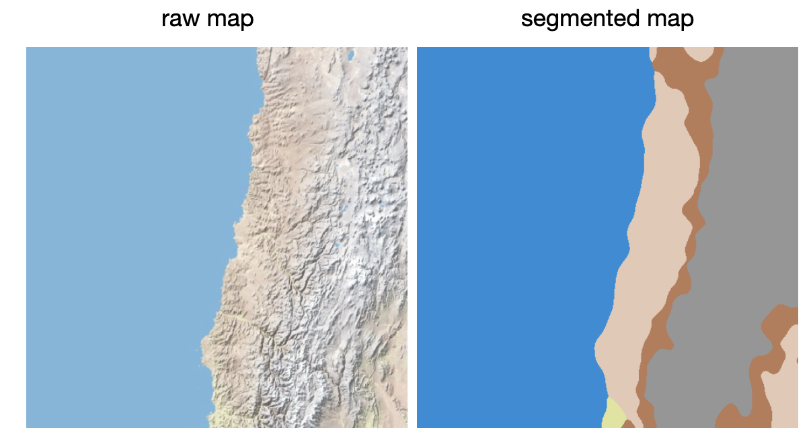
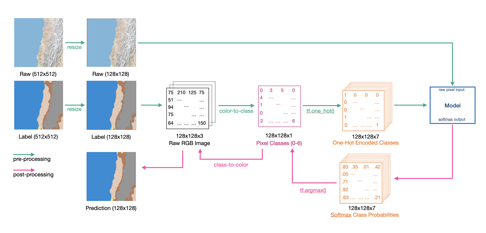

Project
Semantic Map Segmentation

Tolya Evdokimov
Author
Sophie Zhao
Author
Win Aung
Author
Ginny Zhang
Author
#supervised_learning #computer_vision #map_segmentation
This project is a collaboration for CMSC 395: AI class at the University of Richmond. We thought it might be interesting to look into computer vision and image generation models. So for our final project, we wanted to take several models used for image segmentation and compare them using a publicly available dataset on Kaggle.
The link to the GitHub Repo and the report for the project is at the bottom of the page.
Problem and Formulation
Map segmentation is an important problem with applications in autopilot systems in self-driving cars, architecture planning, etc. There are many models available out there that tackle map segmentation, and one of the most prominent is U-Net. U-Net consists of an encoder (for feature extraction) and decoder (for up-sampling and image generation). One distinctive feature of U-Net is its skip connections that help recover the information lost in the down-sampling.
U-Net performs really well, especially on smaller datasets, but there is an alternative architecture - FCN (Fully Connected Network). FCN has several modifications that balance between how many features the model retains in the encoding process through the kernel size and how many features are recovered through skip connections.
In our project, we explored the difference in performance of three models: U-Net, FCN-8, and FCN-32. We used the map segmentation dataset, implemented the three models using Keras with the TensorFlow back-end. The problem was formulated as a pixel-wise classification task, so we conducted several analyses that examine classification performance.
Data Processing
The data was retrieved from a publicly available dataset on Kaggle. The dataset contained raw map images and the corresponding segmented maps, where each color corresponded to one of the seven terrain types.
The raw maps were not modified for the input processing, but the label segmentations required a bit more processing. We retrieved the pixel intensities that corresponded to each terrain type and recoded them to represent class values. We went from a 128x128x3 tensor to 128x128x1, where each value is a class 0-6. The subsequent output form the models is softmax probability distribution so we had to take an argmax and apply the recoding again to get back the generated segmentation. The full data processing pipeline is shown in the figure below.
Segmentation Models
We chose to compare segmentation performance of three models: U-Net, FCN-8, and FCN-32. U-Net consists of two main parts: encoder and decoder. Encoder down-samples the image and extracts the features, while the decoder up-samples the image and retrieves the features lost during the process of down-sampling using skip connections that connect each decoder component to a corresponding encoder component.
Both FCN models use large filters to retain features. Additionally, FCN decoders are very shallow which allows for rapid decoding. FCN-8 uses 8x8 kernels which allows it to better extract the features, but it needs two skip connections to obtain the lost features. FCN-32 uses 32x32 kernels and is not using any skip connections. The model architectures with dimensions are shown below.
We hypothesize that U-Net would have superior performance, followed by FCN-8 and FCN-32. Since the dataset contains only 5,000 examples (of which only 4,000 are allocated for training), FCN is likely to start overfitting. We also resized our images from 512x512 to 128x128, which might additionally contribute to FCN overfitting since it has been shown that FCN models perform better on large datasets with higher image resolution (we further explain it in out report).
Brief Results
As expected, U-Net had superior performance with 95.11% accuracy on the test set. FCN-8 had classification accuracy of 49.65%, and FCN-32 had 37.86% accuracy on the test set.
We conducted further accuracy analysis in the paper report for the project, which can be accessed below.